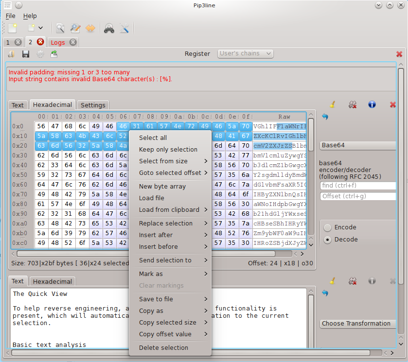

Documentation
Repository
This project is maintained by Gabriel Caudrelier
Pip3line is a raw bytes manipulation utility, able to apply well known and less well known transformations from anywhere to anywhere (almost).
Its main usefullness lies in pentesting and reverse-engineering / binary analysis purposes.
On a Linux KDE desktop the main window would look like this (the actual apparence is system dependent)
The tool is also able to apply a transformation chain `en masse` to either a file, or data blocks received from a TCP socket, a Named Pipe (Windows) or a UNIX Socket (UNIX/Linux) via the Mass Processing utility
To help reverse engineering, a powerfull quick view functionality is present, which will automatically apply a transformation to the current selection.
The text analysis functionality gives you some basic information from your input.
Finally the tool allows you to import/export bytes data easily, either via the Tray Icon, the context menu, or the pre-configured shortcuts.
The import/export functions are personalizable by the user via the Tools->Settings dialog